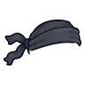

หุ่นระฆังจ่าฝูง
มอนธาตุลม Lv 95–99
เจอที่
| แมพ | โซน | Lv | ภูมิภาค |
|---|---|---|---|
| หอระฆัง ชั้น 1 | 95–96 | เมืองหอระฆัง | |
| หอระฆัง ชั้น 2 | 96–97 | เมืองหอระฆัง | |
| หอระฆัง ชั้น 3 | 97–98 | เมืองหอระฆัง | |
| หอระฆัง ชั้น 4 | 98–99 | เมืองหอระฆัง | |
| หอระฆัง ชั้น 5 | 99–99 | เมืองหอระฆัง | |
| หอระฆัง ชั้น 6 | 99–99 | เมืองหอระฆัง | |
| หอระฆัง ชั้น 7 · ยอดหอ | 99–99 | เมืองหอระฆัง | |
| หอรากมืด (Dark Root) | คณะประสานเสียงเงียบ | 62–71 |
ค่าสถานะตามเลเวล
| Lv | HP | ATK | DEF | MDEF | EXP | Job |
|---|---|---|---|---|---|---|
| 95 | 61,038 | 240–361 | 34 | 17 | 240 | 180 |
| 97 | 64,505 | 249–374 | 35 | 17 | 244 | 183 |
| 99 | 68,063 | 258–386 | 36 | 18 | 249 | 187 |
ตีด้วยธาตุไหนดี
แรงขึ้น: ดิน ×1.5 พิษ ×1.25
เบาลง: น้ำ ×0.5 ลม ×0.25
วัตถุดิบที่ดรอป
| ของ | โอกาส | |
|---|---|---|
| ลิ้นระฆังทอง | 74% | 1 ชิ้น (15% ได้ 2) |
อุปกรณ์ที่ดรอป (10)
| ของ | โอกาส |
|---|---|
| 0.25% | |
| 0.25% | |
| ชุดเวทเกล็ดหิมะ (เสื้อ) | 0.15% |
| ชุดเวทเกล็ดหิมะ (กางเกง + รองเท้า) | 0.15% |
| 0.12% | |
| 0.12% | |
 ผ้าคลุมหัวนินจาดำ | 0.08% |
| 0.06% | |
| 0.06% | |
| ชุดเวทเกล็ดหิมะ (จี้เกล็ดหิมะ) | 0.05% |
สกิล
ทุบพื้น (Lv 25+) · ทุบพื้น (Lv 60+) · ดึง (Lv 60+)